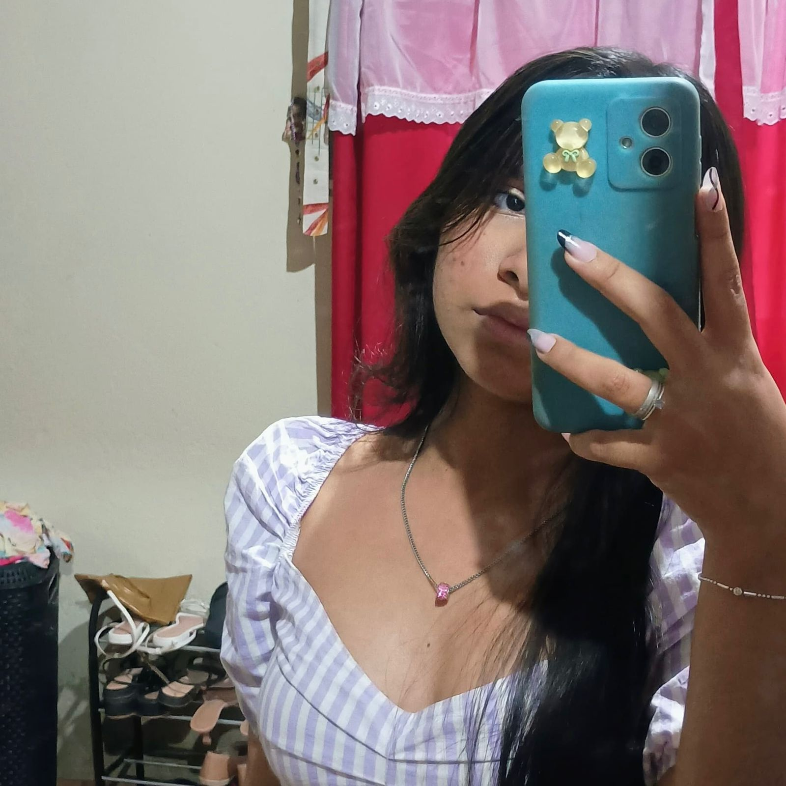

Leandro777.mdm 
Acaraú

1.943
 hellem.vasc_
De longe o mais lindo que já entrou na minha vida ❤️❤️❤️❤️
hellem.vasc_
Lindo é pouco, você é maravilhoso, perfeito e meu! 🥰🥰
hellem.vasc_
Deus caprichou demais quando te fez. 👸
hellem.vasc_
O homem mais incrível que já conheci, sorte a minha te ter. 😍😍😍😍
hellem.vasc_
Cada dia mais apaixonada por você, meu amor! 🔥🔥🔥
hellem.vasc_
Se beleza fosse crime, você estaria preso pra sempre, meu amor! 😂😂 ❤
Se eu pudesse congelar o tempo, seria em todos os momentos em que a gente esteve juntos, porque são nesses instantes que eu me sinto completo, feliz e com a certeza de que encontrei o amor da minha vida. 🌍
 Previas do Spotify
Previas do Spotify